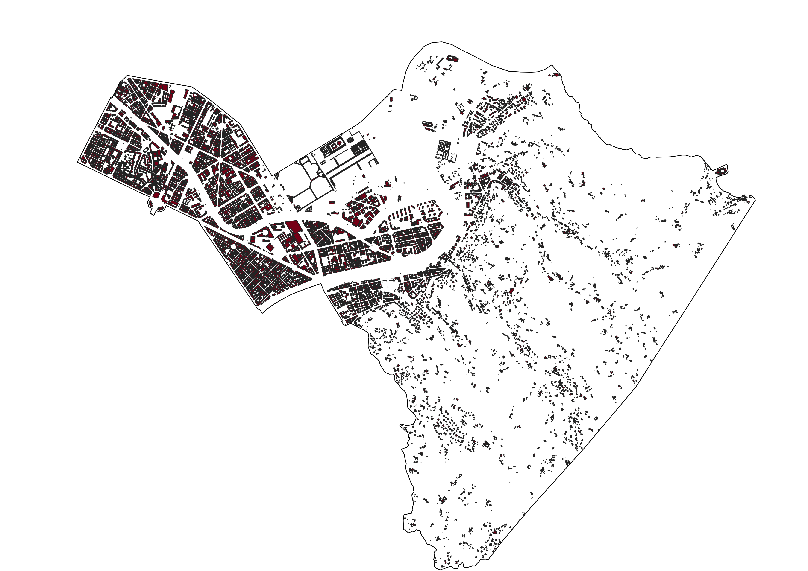
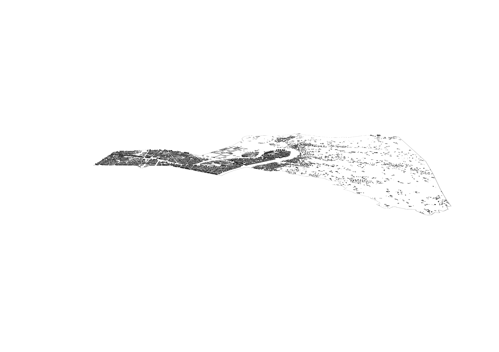

CSI Data Quality Analyzer – Dashboard
This dashboard summarizes the analysis of the CSI building dataset in Circoscrizione 7. All values are computed from aggregated CSV outputs (no raw GIS data is published).
Data source: CSI sample (Circoscrizione 7) – aggregated outputs only.
3D Readiness (UNITA_VOLUMETRICA)
Source: examples/summary_unita_volumetrica_sample.csv
Key numbers
Maps (exported from QGIS)
These static views show the CSI sample for Circoscrizione 7. Screenshots are exported
from QGIS and stored in docs/assets/.
2D Map
3D View
Layer overview (sample)
Source: examples/summary_layers_sample.csv
Interactive Height Availability Map (Circoscrizione 7)
This map shows, for each volumetric unit, whether the dataset contains usable height
information (OK) or is missing critical vertical attributes
(MISSING). The visualization is based on the
has_height field derived from QT_GRONDA and
QT_SUOLO.
If the embedded map is too small, you can open it in a separate tab: Open map in a separate tab
CSI Dataset vs FIWARE Building Model
This table compares key attributes in the CSI dataset with the FIWARE Building data model. It highlights where a direct mapping is possible and where additional transformation or enrichment would be needed to achieve interoperability.
| Concept | CSI (Edificato) | FIWARE Building model | Mapping / Gap |
|---|---|---|---|
| Unique identifier | ID (local building identifier) |
id (URN, e.g. urn:ngsi-ld:Building:001) |
Requires conversion from local numeric ID to FIWARE URN syntax. |
| Geometry (footprint / volume) | UNITA_VOLUMETRICA polygon |
location (GeoJSON Polygon / MultiPolygon) |
Direct mapping possible after export of CSI geometries to GeoJSON. |
| Building height | QT_GRONDA, QT_SUOLO,
derived ALTEZZA (sometimes NULL) |
height attribute |
Mapping possible where values exist; NULLs require estimation or remain explicitly missing. |
| Number of floors | NUM_PIANI |
numberOfFloors |
Direct mapping where NUM_PIANI is populated. |
| Use / function | CATEG_USO (residential, service, etc.) |
category / usage |
Requires alignment between CSI codes and FIWARE category vocabulary. |